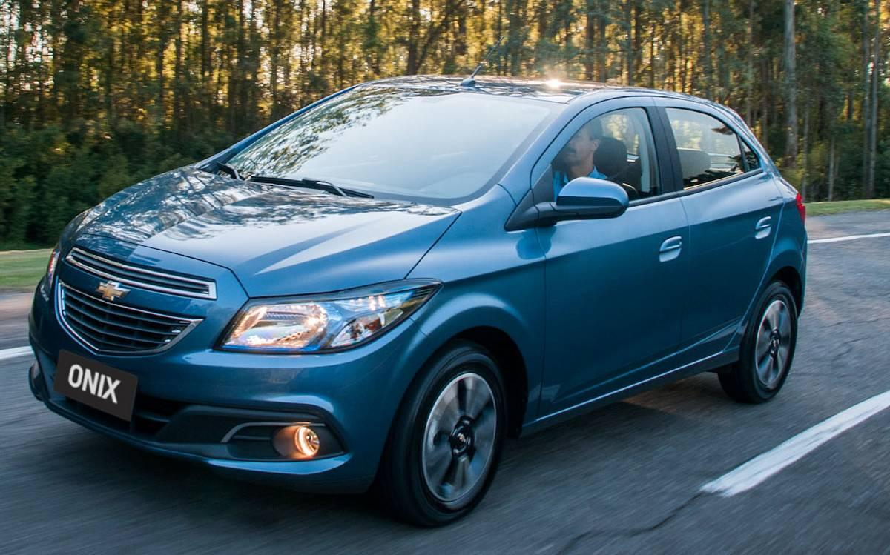

Carros até 50 mil reais são a escolha ideal para quem procura economia e funcionalidade. Com uma ampla gama de opções, esses veículos oferecem um equilíbrio perfeito entre preço acessível e desempenho confiável, atendendo às necessidades diárias de mobilidade.
O Chevrolet Onix 2014 foi um modelo importante para a marca, marcando presença no mercado brasileiro e conquistando muitos compradores. Aqui estão algumas características notáveis deste carro:
O Onix 1.0 com o motor SPE/4 consegue gerar 78 cavalos de potência com gasolina e 80 cavalos com etanol, a 6.400 rpm. O torque é de 9,5 kgfm com gasolina e 9,8 kgfm com etanol, disponível a partir de 5.200 rotações.
Já o Onix 1.4 SPE/4 consegue entregar 98 cv com gasolina e 106 cv com etanol, a 5.600 rpm. Seu torque é de 12,9 kgfm e 13,9 kgfm, respectivamente, a 4.800 giros. Neste caso, 90% do torque máximo está disponível a partir de 2.300 giros.
Chevrolet Onix 1.0 Etanol
Consumo de 7,8 km/l na cidade
Consumo de 11,5 km/l na estrada
Chevrolet Onix 1.0 Gasolina
Consumo de 9,2 km/l na cidade;
Consumo de 13,5 km/l na estrada
O Hyundai HB20 2014 1.0 é um carro compacto produzido pela montadora sul-coreana Hyundai. Ele foi lançado no Brasil como parte da estratégia da Hyundai de competir no segmento de carros compactos, e rapidamente ganhou popularidade devido ao seu design atraente e recursos de segurança.
O Hyundai HB20 2014 1.0 é equipado com um motor de 3 cilindros, que é um dos destaques deste modelo.A potência pode variar dependendo da configuração exata, mas normalmente gira em torno de 75 a 80 cavalos de potência (cv) quando abastecido com gasolina e um pouco mais quando abastecido com etanol.
O Hyundai HB20 2014 1.0 Etanol
Consumo de 7,6 km/l na cidade
Consumo de 9.8 km/l na estrada
O Hyundai HB20 2014 1.0 Gasolina
Consumo de 11.5 km/l na cidade;
Consumo de 14.5 km/l na estrada
Pagina principal
Melhores carros até 200 mil reais